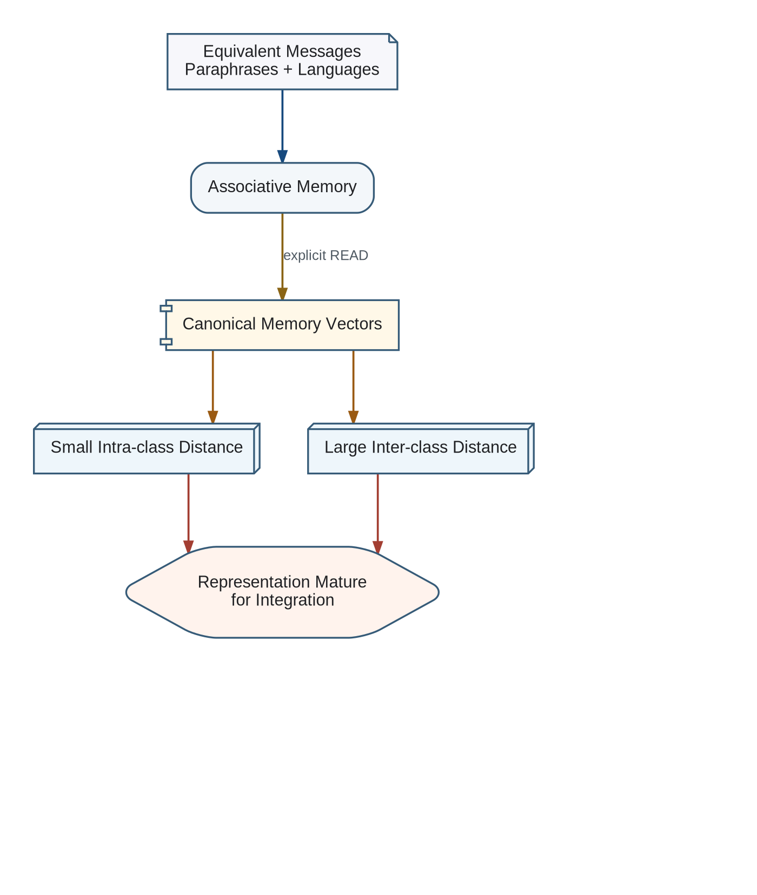

Associative Memory should not be considered ready for Transformer integration merely because its training loss is low. Its representation must become stable with respect to meaning rather than surface form.

Semantic invariance
Inputs that are differently worded but equal in meaning should generate nearly identical canonical Memory Vectors. This requirement includes paraphrases, different word order, active and passive forms, short and expanded formulations, and equivalent statements in different languages.
For Q_i, Q_j in the same semantic equivalence class E:
d(M(Q_i), M(Q_j)) < epsilonSemantic discrimination
Semantic invariance must be paired with semantic discrimination. Messages with different meanings must remain separated; otherwise the memory could satisfy invariance by collapsing all inputs to the same vector.
For Q_i and Q_k with different meanings:
d(M(Q_i), M(Q_k)) > deltaOperational maturity criterion
Associative Memory is sufficiently mature for integration when intra-class distances remain below an accepted threshold, inter-class separation remains above an accepted threshold, multilingual consistency is stable across checkpoints, and nearest-neighbour retrieval preserves semantic classes.
- mean and maximum intra-class distance
- mean and minimum inter-class distance
- multilingual semantic consistency
- nearest-neighbour semantic retrieval accuracy
- stability of the metrics across training checkpoints